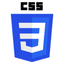
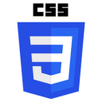

About Me
About Me
“Dancing faces you towards heaven, whichever direction you turn.”
Hello, I’m Thomas Joseph Almorin, a junior Information Systems student at the Technological University of the Philippines – Manila.
The first time I became aware of programming was during my high school years. My father, a teacher, would often share stories about his former students, many of whom had gone on to become successful IT graduates working both locally and abroad. He asked if I had any interest in pursuing a similar path, which made me reflect on whether this field aligned with my aspirations.
This led me to join a school club that focused on programming and related activities. It was during this time that I truly developed an interest in programming.


 
